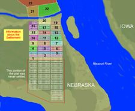

Cutler's Park Plaque |
Cutler's Park was briefly the headquarter camp of The Church of Jesus Christ of Latter-day Saints (Mormons) established by 2500 members as they were making their way westward to the Rocky Mountains. It was apparently created in August 1846 and covered all around what is now the intersection of Mormon Bridge Road and Young Street in Omaha, Nebraska, though it appears to have been completely vacated by December 1846, before even Nebraska Territory came into existence. Historic Florence, Nebraska was built on its site, making use of what had been left when it was abandoned.
Cutler's Park proved to be Nebraska's first and briefest planned community. Although it was made up of only tents and wagons arranged in orderly squares, it had a governing council with various committees, an emergency brigade, and even a town square. A monument has been erected to commemorate this historic site. Cutler's Park was named in honor of Alpheus Cutler, who founded the site. Cutler was an early leader in the Latter Day Saint movement, who was later known for being one of the master builders of the Nauvoo Temple and for establishing his own branch of Mormonism known as the Church of Jesus Christ (Cutlerite). Cutler's Park was some 3½ miles west-southwest of another short-lived but notable settlement established in 1846, Winter Quarters, which outlasted Cutler's Park, remaining until 1848.
Source: Wikipedia|  Winter Quarters Florence Nebraska Territory |
Winter Quarters was an encampment formed by approximately 2,500 members of the Church of Jesus Christ of Latter-day Saints as they waited during the winter of 1846-1847 for better conditions for their trek westward. It followed a preliminary tent settlement some 3½ miles west at Cutler's Park. The Mormons built more than 800 cabins at the Winter Quarters settlement. Located in present-day North Omaha overlooking the Missouri River, the settlement remained populated until 1848.
Wintering Saints had left their homes in Nauvoo, Illinois on relatively short notice and brought limited useful supplies. An influential non-Mormon Thomas L. Kane, seeking to convince the LDS leadership to establish a volunteer military group (later known as the Mormon Battalion), received permission from the U.S. federal government for the group to encamp in Omaha Tribe lands, including the site of Cutler's Park. Conditions at the settlement remained primitive the first month, with pioneers living in tents while the men put up hay, found water and managed the cattle.
Due to arguments among the Oto and Omaha tribes over use of the land, the Mormons moved their camp three miles east to a site overlooking the Missouri River. There they built cabins and sod houses for the winter. One group of cabins became known as Kimball Row. It consisted of thirteen adjacent cabins, with the homes of church leaders Heber C. Kimball and Newel K. Whitney at either end. The Latter-day Saints actively traded with American Indian and trading settlements in northern Missouri and Iowa, exchanging household goods an d small amounts of cash for foodstuffs, such as hogs, grain and vegetables, and supplies for the emigration effort. Young Mormon men also produced handcrafted items such as willow baskets and washboards for sale. Church funds also allowed the community to build a much needed water-powered gristmill.
Even with trade, diet in the camp was mainly corn bread, salt bacon and a little milk, with occasional fresh game or domestic meat. Scurvy, known as "blackleg" during this period, became a major problem. Missouri potatoes and horseradish found at old Fort Atkinson helped ease the level of disease, but all residents lacked fresh vegetables in their diet. Tuberculosis (known as consumption), malaria, and unidentified fevers and chills also plagued the temporary settlement.
Church records for the first summer do not contain information on disease victims; however, later records indicate that, from mid-September 1846 to May 1848, disease caused the deaths of 359 residents.
Brigham Young supervised construction of the Florence Mill. Today it is reportedly the only surviving building in the area to have been built by Mormons. The settlers needed a mill to grind corn, wheat, and rye to create cornmeal and flour products. Constructed next to Turkey Creek, later called Mill Creek, which flowed into the Missouri River, the original structure was started in the fall of 1846. it was completed by spring of 1847 at the cost of $3000. Brigham Young sold this mill to John Neff, who left it when he also moved to Salt Lake City. Later settlers renovated and used the mill for years. Evidence of the original construction techniques has been found in the surviving Florence Mill.
Source: Wikipedia